Summarizing ECT results – ≥ 5 supporting SNPs & ≥ 20 genes, Onek1k
XSun
2025-12-09
Last updated: 2025-12-15
Checks: 6 1
Knit directory: factor_analysis_new/
This reproducible R Markdown analysis was created with workflowr (version 1.7.0). The Checks tab describes the reproducibility checks that were applied when the results were created. The Past versions tab lists the development history.
The R Markdown file has staged changes. To know which version of the
R Markdown file created these results, you’ll want to first commit it to
the Git repo. If you’re still working on the analysis, you can ignore
this warning. When you’re finished, you can run
wflow_publish to commit the R Markdown file and build the
HTML.
Great job! The global environment was empty. Objects defined in the global environment can affect the analysis in your R Markdown file in unknown ways. For reproduciblity it’s best to always run the code in an empty environment.
The command set.seed(20221201) was run prior to running
the code in the R Markdown file. Setting a seed ensures that any results
that rely on randomness, e.g. subsampling or permutations, are
reproducible.
Great job! Recording the operating system, R version, and package versions is critical for reproducibility.
Nice! There were no cached chunks for this analysis, so you can be confident that you successfully produced the results during this run.
Great job! Using relative paths to the files within your workflowr project makes it easier to run your code on other machines.
Great! You are using Git for version control. Tracking code development and connecting the code version to the results is critical for reproducibility.
The results in this page were generated with repository version bd83a1d. See the Past versions tab to see a history of the changes made to the R Markdown and HTML files.
Note that you need to be careful to ensure that all relevant files for
the analysis have been committed to Git prior to generating the results
(you can use wflow_publish or
wflow_git_commit). workflowr only checks the R Markdown
file, but you know if there are other scripts or data files that it
depends on. Below is the status of the Git repository when the results
were generated:
Unstaged changes:
Modified: analysis/revision_summarizing_ECT_setting_SLEremoved_1k1k.Rmd
Staged changes:
New: analysis/revision_power_realdata_1k1k.Rmd
Modified: analysis/revision_summarizing_ECT_setting_SLEremoved_1k1k.Rmd
Note that any generated files, e.g. HTML, png, CSS, etc., are not included in this status report because it is ok for generated content to have uncommitted changes.
These are the previous versions of the repository in which changes were
made to the R Markdown
(analysis/revision_summarizing_ECT_setting_SLEremoved_1k1k.Rmd)
and HTML
(docs/revision_summarizing_ECT_setting_SLEremoved_1k1k.html)
files. If you’ve configured a remote Git repository (see
?wflow_git_remote), click on the hyperlinks in the table
below to view the files as they were in that past version.
| File | Version | Author | Date | Message |
|---|---|---|---|---|
| Rmd | bd83a1d | XSun | 2025-12-12 | update |
| html | bd83a1d | XSun | 2025-12-12 | update |
| Rmd | 50cff89 | XSun | 2025-12-11 | update |
| html | 50cff89 | XSun | 2025-12-11 | update |
We applied cutoffs of + - supporting SNP ≥ 5 and -
gene number in pathway ≥ 20
to filter the pairs before performing FDR control. All results presented below are based on this setting.
library(dplyr)
library(ggplot2)
library(gridExtra)
library(forcats)
library(tidyr)
library(ensembldb)
library(EnsDb.Hsapiens.v75)
library(ggrepel)
library(ggrastr)
celltypes <- c("B_cell","CD14_positive_monocyte","platelet","T_cell","thymocyte")
types <- c("B cell (CD19+)","Monocyte (CD14+)","Platelet","T cell (CD4+)","T cell (CD8+)")
names(celltypes) <- types
names(types) <- celltypes
source("/project/xinhe/xsun/pathway_factor/data_v2/traits_finalselection_SLEremoved.R")
folder_ect_summary <- "/project/xinhe/xsun/pathway_factor/analysis/1.ECT_1k1k/ECT_summary/"Overview of the expression data and expression factors
summary <- c()
for (celltype in celltypes){
expr <- readRDS(paste0("/project/xinhe/xsun/data/onek1k/expr/expr_normalized_grouped/", celltype, "_pseudobulk.rds"))
n_gene <- nrow(expr)
factors <- data.table::fread(paste0("/project/xinhe/xsun/pathway_factor/data_1k1k/expr_phefiles/20genes/all_pathways_pcs_", celltype, ".phen"))
n_factors <- ncol(factors) - 2
tmp <- c(celltype, n_gene, n_factors)
summary <- rbind(summary,tmp)
}
summary <- as.data.frame(summary)
colnames(summary) <- c("Celltype","n_genes_expressed","n_expr_factors")
rownames(summary) <- NULL
summary$Celltype <- types[summary$Celltype]
DT::datatable(summary,caption = htmltools::tags$caption( style = 'caption-side: left; text-align: left; color:black; font-size:150% ;','Number of genes expressed and number of expression factors'),options = list(pageLength = 10) )Number of supporting variants
p <- list()
for(celltype in celltypes){
df <- readRDS(paste0("/project/xinhe/xsun/pathway_factor/analysis/1.ECT_1k1k/ECT_summary/", celltype,"_ECT_summary_poolalltraits_selected.RDS"))
df <- df[df$trait_id %in% traits_EUR,]
summary <- df %>%
count(num_supp_SNP, name = "Freq")
# Plot
p[[celltype]] <- ggplot(summary, aes(x = num_supp_SNP, y = Freq)) +
geom_bar(stat = "identity", fill = "steelblue") +
theme_bw(base_line_size = 0.3) +
ggtitle(types[celltype]) +
theme(plot.title = element_text(hjust = 0.5)) +
labs(x = "# of supporting SNPs in each pair", y = "# of factor–trait pairs") +
geom_text(
aes(label = ifelse(num_supp_SNP %% 5 == 0, as.character(Freq), "")),
colour = "black", size = 2, vjust = -0.1, family = "Times"
) +
annotate(
geom = "text",
x = Inf, y = Inf,
label = paste0("# of candidate pairs = ", sum(summary$Freq[summary$num_supp_SNP >= 5])),
hjust = 1.1, vjust = 1.5, size = 3, family = "Times", color = "black"
) +
theme(
axis.title.x = element_text(size = 10),
axis.text.x = element_text(size = 8, color = "black"),
axis.title.y = element_text(size = 10),
axis.text.y = element_text(size = 8, color = "black"),
text = element_text(family = "Times")
) +
scale_x_continuous(breaks = seq(0, max(summary$num_supp_SNP), 5))
}
all <- grid.arrange(p[[1]],p[[2]],p[[3]],p[[4]],p[[5]], nrow = 2)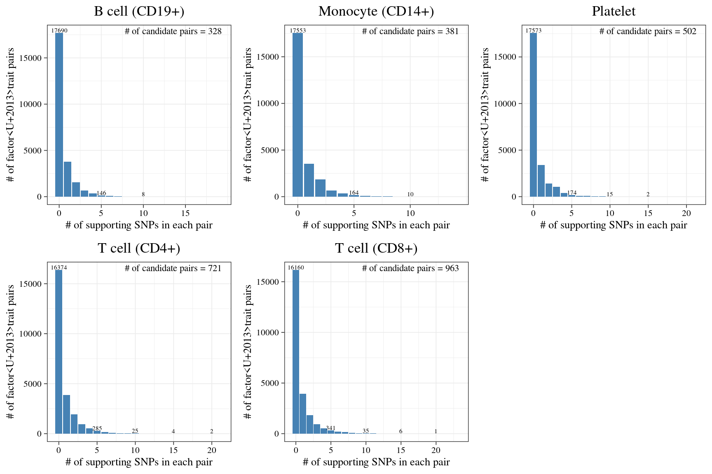
| Version | Author | Date |
|---|---|---|
| 50cff89 | XSun | 2025-12-11 |
Histogram for ECT p-values
p <- list()
for(celltype in celltypes){
df <- readRDS(paste0("/project/xinhe/xsun/pathway_factor/analysis/1.ECT_1k1k/ECT_summary/", celltype,"_ECT_summary_poolalltraits_selected.RDS"))
df <- df[df$trait_id %in% traits_EUR,]
df <- df[complete.cases(df$p_ECT),]
summary_p <- df %>%
mutate(bin = cut(p_ECT, breaks = seq(0, 1, by = 0.05), include.lowest = TRUE)) %>%
count(bin, name = "Freq")
# Correctly handle both [ and ( at the start of interval labels
summary_p <- summary_p %>%
mutate(
bin_low = as.numeric(sub("[^0-9\\.]*([0-9\\.]+),.*", "\\1", bin)),
bin_high = as.numeric(sub(".*,([0-9\\.]+)\\]", "\\1", bin)),
bin_mid = (bin_low + bin_high) / 2
)
p[[celltype]] <- ggplot(summary_p, aes(x = bin_mid, y = Freq)) +
geom_bar(stat = "identity", fill = "steelblue") +
theme_bw(base_line_size = 0.3) +
ggtitle(types[celltype]) +
theme(plot.title = element_text(hjust = 0.5)) +
labs(x = "ECT p-value", y = "Count") +
theme(
axis.title.x = element_text(size = 10),
axis.text.x = element_text(size = 8, color = "black"),
axis.title.y = element_text(size = 10),
axis.text.y = element_text(size = 8, color = "black"),
text = element_text(family = "Times")
) +
scale_x_continuous(breaks = seq(0, 1, 0.1), limits = c(0, 1))
}
all <- grid.arrange(p[[1]],p[[2]],p[[3]],p[[4]],p[[5]], nrow = 2)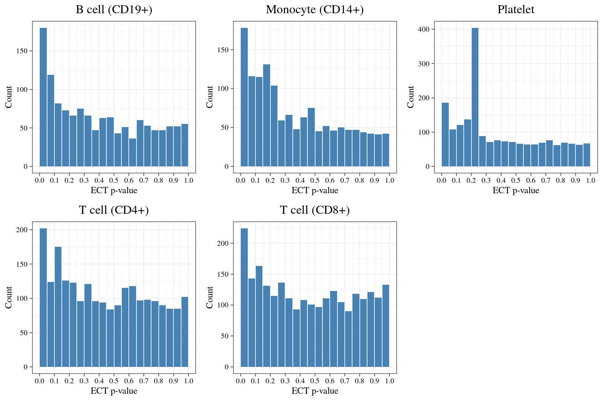
| Version | Author | Date |
|---|---|---|
| 50cff89 | XSun | 2025-12-11 |
Number of significant pairs at different cutoffs, for each cell type
num_fdr01 <- c()
num_fdr02 <- c()
for(celltype in celltypes){
df <- readRDS(paste0(folder_ect_summary, celltype,"_ECT_summary_poolalltraits_selected.RDS"))
df_fdr01 <- df[df$ECT_FDR_5suppSNP < 0.1,]
df_fdr01 <- df_fdr01[complete.cases(df_fdr01$p_ECT),]
num_fdr01 <- c(num_fdr01, nrow(df_fdr01))
df_fdr02 <- df[df$ECT_FDR_5suppSNP < 0.2 & df$ECT_FDR_5suppSNP >= 0.1,]
df_fdr02 <- df_fdr02[complete.cases(df_fdr02$p_ECT),]
num_fdr02 <- c(num_fdr02, nrow(df_fdr02))
}
sum <- data.frame(celltype = types,
num_fdr01 = num_fdr01,
num_fdr02 = num_fdr02)
df <- sum %>%
pivot_longer(cols = starts_with("num_fdr"), names_to = "event", values_to = "total") %>%
mutate(
event = recode(event,
"num_fdr01" = "FDR < 0.1",
"num_fdr02" = "0.1 < FDR < 0.2")
)
df$event <- factor(df$event, levels = c("FDR < 0.1", "0.1 < FDR < 0.2"))
# Plot
p1 <- ggplot(df, aes(x = fct_inorder(celltype), y = total, fill = event)) +
geom_bar(stat = "identity", position = position_dodge(width = 0.9), alpha = 0.9) +
scale_fill_manual(
name = "group",
values = c("#F8766D", "darkturquoise"),
labels = c("FDR < 0.1", "0.1 < FDR < 0.2")
) +
geom_text(
aes(label = total),
position = position_dodge(width = 0.9),
color = "black",
size = 3,
vjust = -0.3
) +
labs(x = "Cell types", y = "Count") +
ggtitle("# of pairs") +
ylim(0, 30) +
theme_bw(base_line_size = 0.3) +
theme(
axis.title.x = element_text(size = 14),
axis.text.x = element_text(size = 8, color = "black", angle = 45, hjust = 1, vjust = 1.1),
axis.title.y = element_text(size = 14),
axis.text.y = element_text(size = 12, color = "black"),
text = element_text(family = "Times")
)
p1
| Version | Author | Date |
|---|---|---|
| 50cff89 | XSun | 2025-12-11 |
Detailed results for all pairs at ECT FDR < 0.2
df_all_fdr02 <- c()
for(celltype in celltypes){
df <- readRDS(paste0("/project/xinhe/xsun/pathway_factor/analysis/1.ECT_1k1k/ECT_summary/", celltype,"_ECT_summary_poolalltraits_selected.RDS"))
df <- df[complete.cases(df$ECT_FDR_5suppSNP),]
df_fdr02 <- df[df$ECT_FDR_5suppSNP < 0.2,]
df_all_fdr02 <- rbind(df_all_fdr02,df_fdr02)
}
rownames(df_all_fdr02) <- NULL
#df_all_fdr02$celltype <- types[df_all_fdr02$celltype]
df_all_fdr02 <- df_all_fdr02[order(df_all_fdr02$ECT_FDR_5suppSNP),]
df_all_fdr01 <- df_all_fdr02[df_all_fdr02$ECT_FDR_5suppSNP < 0.1,]
DT::datatable(df_all_fdr02,caption = htmltools::tags$caption( style = 'caption-side: left; text-align: left; color:black; font-size:150% ;','Pairs with ECT FDR <= 0.2 '),options = list(pageLength = 10) )Traits and pathways identified – WBC-ebi-a-GCST90002407
trait <- "WBC-ebi-a-GCST90002407"
df_trait_fdr01 <- c()
df_trait_fdr02 <- c()
for(celltype in celltypes){
df <- readRDS(paste0(folder_ect_summary, celltype,"_ECT_summary_poolalltraits_selected.RDS"))
df_fdr01 <- df[df$trait_id == trait & df$ECT_FDR_5suppSNP< 0.1, ]
df_fdr01 <- df_fdr01[complete.cases(df_fdr01$ECT_FDR_5suppSNP),]
df_trait_fdr01 <- rbind(df_trait_fdr01,df_fdr01)
df_fdr02 <- df[df$trait_id == trait & df$ECT_FDR_5suppSNP< 0.2, ]
df_fdr02 <- df_fdr02[complete.cases(df_fdr02$ECT_FDR_5suppSNP),]
df_trait_fdr02 <- rbind(df_trait_fdr02,df_fdr02)
}
# Prepare data
selected <- df_trait_fdr02 %>%
dplyr::mutate(
lgectpval = -log10(p_ECT),
pathwayName = paste0(pathwayName," ",factor," ", celltype)
)
# Plot
p <- ggplot(selected) +
geom_col(
aes(x = lgectpval,
y = reorder(pathwayName, lgectpval),
fill = celltype),
width = 0.75
) +
geom_text(
aes(0, y = pathwayName, label = pathwayName),
hjust = 0,
nudge_x = 0.1,
colour = "white",
size = 4.5,
family = "Times"
) +
geom_text(
aes(lgectpval, y = pathwayName, label = num_supp_SNP),
hjust = 0,
nudge_x = 0.05,
colour = "black",
size = 4.5,
family = "Times"
) +
labs(
x = expression(paste("-log"[10], "(ECT p-value)")),
y = NULL,
title = paste0(unique(selected$trait)," ECT FDR < 0.2")
) +
theme_bw(base_line_size = 0.3) +
theme(
axis.text.y = element_blank(),
axis.title.y = element_blank(),
text = element_text(family = "Times"),
plot.title = element_text(hjust = 0.5)
) +
xlim(0, 8)
p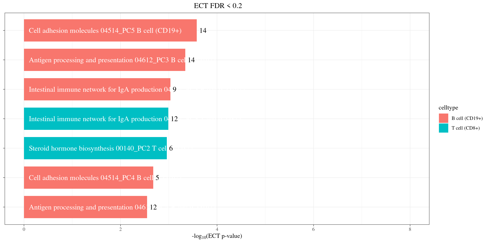
| Version | Author | Date |
|---|---|---|
| 50cff89 | XSun | 2025-12-11 |
Roles of T cell CD 8+ in WBC
- CD8⁺ T cells are one subtype of lymphocytes, and lymphocytes are one major component of the total WBC count.
- Therefore, changes in CD8⁺ T-cell numbers (e.g., infection, immunosuppression, autoimmunity) will change the lymphocyte fraction and can shift the overall WBC count.
- Beyond being part of the WBC composition, CD8⁺ T cells produce cytokines that shape hematopoiesis, which may influence neutrophils, monocytes, etc.
Roles of B cell in WBC
- Direct role (compositional)
- B cells are one subtype of lymphocytes, which are a major component of the total WBC count.
- If B-cell numbers increase or decrease, the total WBC count will change accordingly.
- Indirect role (immune regulation)
- B cells secrete cytokines (e.g., IL-6, IL-10) that can modulate myelopoiesis.
- B-cell activation or depletion (e.g., rituximab) often leads to measurable shifts in circulating WBC subsets.
Plots for all pairs at ECT FDR < 0.1
fdr_cutoff <- 0.2
#for (i in 1:1){
for (i in 1:nrow(df_all_fdr01)){
celltype <- celltypes[df_all_fdr01$celltype[i]]
trait <- df_all_fdr01$trait_id[i]
factor <- df_all_fdr01$factor[i]
file_harmo <- paste0("/project/xinhe/xsun/pathway_factor/analysis/1.ECT_1k1k/assoc_harmonize/",celltype, "-", trait, "_harmo.RDS")
dt_harmo <- readRDS(file_harmo)
df <- readRDS(paste0("/project/xinhe/xsun/pathway_factor/analysis/1.ECT_1k1k/ECT_summary/", celltype,"_ECT_summary_poolalltraits_selected.RDS"))
dat <- dt_harmo[[factor]]
snp_select <- dat[dat$FDR.exposure < fdr_cutoff,]
snp_select$chr <- as.numeric(as.character(snp_select$chr.exposure))
snp_select$chr <- factor(snp_select$chr, levels = sort(unique(snp_select$chr)))
fit <- lm(snp_select$beta.outcome ~ 0 + snp_select$beta.exposure)
ect_p <- df$p_ECT[df$factor == factor & df$trait ==trait]
pathwayname <- df$pathwayName[df$factor == factor & df$trait ==trait]
eff <- ggplot(snp_select, aes(x=beta.exposure, y=beta.outcome, color=chr)) +
geom_point(size = 4) +
geom_errorbar(aes(ymin=beta.outcome-se.outcome, ymax=beta.outcome+se.outcome, color=chr), width=0.01, alpha=0.6) +
theme_bw(base_line_size = 0.3) +
theme(axis.title.x = element_text(size = 16),
axis.text.x = element_text(size = 14, color = "black"),
axis.title.y = element_text(size =16),
axis.text.y = element_text(size = 14, color = "black"),
text= element_text(family="Times"),
legend.text = element_text(size=12),
legend.title = element_text(size=12)) +
geom_abline(slope = coef(fit)[1], intercept = 0, color = "grey", size = 0.5) +
geom_label(aes(x = Inf, y = Inf), hjust = 1, vjust = 1,
label = paste("R^2 = ", signif(summary(fit)$r.squared, 3),
"\nECT p-value =", ect_p),
color = "black", family = "Times", size =3, label.size = NA,fill=NA) +
xlab(expression(hat(beta)[factor])) +
ylab(expression(hat(beta)[gwas])) +
geom_vline(xintercept = 0, color = "grey", linetype = "dashed") +
geom_hline(yintercept = 0, color = "grey", linetype = "dashed")
#snp_select <- dat[dat$FDR.exposure > fdr_cutoff & dat$steiger_dir ==T,]
snp_select <- dat[dat$FDR.exposure > fdr_cutoff,]
fit <- lm(snp_select$beta.exposure~ 0 + snp_select$beta.outcome)
coef <- summary(fit)
p <- round(coef$coefficients[,4], digits = 4)
#ect_p <- df$p_ECT[df$factor == factor & df$trait ==trait]
eff_rev <- ggplot(snp_select, aes(x=beta.outcome, y=beta.exposure)) +
geom_point(size = 4, color ="steelblue") +
theme_bw(base_line_size = 0.3) +
theme(axis.title.x = element_text(size = 16),
axis.text.x = element_text(size = 14, color = "black"),
axis.title.y = element_text(size =16),
axis.text.y = element_text(size = 14, color = "black"),
text= element_text(family="Times"),
legend.text = element_text(size=12),
legend.title = element_text(size=12)) +
geom_abline(slope = coef(fit)[1], intercept = 0, color = "grey", size = 0.5) +
geom_label(aes(x = Inf, y = Inf), hjust = 1, vjust = 1,
label = paste("R^2 = ", signif(summary(fit)$r.squared, 3),
"\n p-value =", p),
color = "black", family = "Times", size =3, label.size = NA,fill=NA) +
xlab(expression(hat(beta)[gwas])) +
ylab(expression(hat(beta)[factor])) +
geom_vline(xintercept = 0, color = "grey", linetype = "dashed") +
geom_hline(yintercept = 0, color = "grey", linetype = "dashed")
file_gene_loading <- paste0("/project/xinhe/xsun/pathway_factor/analysis/1.ECT_1k1k/gene_loading/",celltype, "_", factor, "-", trait, ".RDS")
gene_loadings_pc <- readRDS(file_gene_loading)
gene_loadings_pc_abs <- abs(gene_loadings_pc)
gene_loadings_pc_abs_sort <- sort(gene_loadings_pc_abs,decreasing = T)
topgenes <- names(gene_loadings_pc_abs_sort)[1:10]
gene_loadings_pc <- as.data.frame(cbind(names(gene_loadings_pc),gene_loadings_pc))
names(gene_loadings_pc) <- c("gene_name","gene_loadings_pc")
# Extract gene information based on the gene symbol
gene_info <- genes(EnsDb.Hsapiens.v75, filter = ~ gene_name == gene_loadings_pc$gene_name)
gene_info <- as.data.frame(gene_info)
gene_info <- gene_info[!duplicated(gene_info$gene_name),]
gene_info <- merge(gene_info,gene_loadings_pc, by="gene_name")
gene_info <- gene_info[gene_info$seqnames %in%c(1:22),]
loading_plot <- gene_info[,c("seqnames","start","gene_name","gene_loadings_pc")]
colnames(loading_plot) <- c("chromosome_name","start_position","gene_name","loadings")
loading_plot$loadings <- round(as.numeric(loading_plot$loadings),digits = 4)
don <- loading_plot %>%
# Compute chromosome size
group_by(chromosome_name) %>%
summarise(chr_len=max(start_position)) %>%
# Calculate cumulative position of each chromosome
mutate(tot=cumsum(as.numeric(chr_len))-as.numeric(chr_len)) %>%
dplyr::select(-chr_len) %>%
# Add this info to the initial dataset
left_join(loading_plot, ., by=c("chromosome_name"="chromosome_name")) %>%
# Add a cumulative position of each SNP
arrange(chromosome_name, start_position) %>%
mutate( start_positioncum=start_position+tot) %>%
# Add highlight and annotation information
#mutate( is_annotate=ifelse(gene_name %in% loading_plot_top10$gene_name, "yes", "no"))
mutate( is_annotate=ifelse(gene_name %in% topgenes, "yes", "no"))
# Then we need to prepare the X axis. Indeed we do not want to display the cumulative position of SNP in bp, but just show the chromosome name instead.
axisdf = don %>% group_by(chromosome_name) %>% summarize(center=( max(start_positioncum) + min(start_positioncum) ) / 2 )
manhplot_gene <- ggplot(don, aes(x=start_positioncum, y=loadings)) +
# Show all points
#rasterise(geom_point( aes(color=as.factor(chromosome_name)), alpha=0.8, size=3),dpi=80 )+
geom_point( aes(color=as.factor(chromosome_name)), alpha=0.8, size=3) +
scale_color_manual(values = rep(c("red", "steelblue"), 22)) +
# custom X axis:
scale_x_continuous( label = as.integer(axisdf$chromosome_name), breaks= axisdf$center ) +
#scale_y_continuous(expand = c(0, 0) ) + # remove space between plot area and x axis
#ylab(expression(paste("-log"[10],"(p-value)"))) +
#ylim(0,max(-log10(don$loadings)) + 2) +
#ylim(min(as.numeric(don$loadings)),max(as.numeric(don$loadings))) +
#ylab("") +
ylab("Gene Loadings") +
xlab("Chromosome") +
# Custom the theme:
theme_bw() +
#ggtitle(i) + theme(plot.title = element_text(hjust = 0.5)) +
theme(
legend.position="none",
panel.border = element_blank(),
panel.grid.major.x = element_blank(),
panel.grid.minor.x = element_blank(),
axis.title.x = element_text(size = 18),
axis.text.x = element_text(size = 16, color = "black"),
axis.title.y = element_text(size = 18),
axis.text.y = element_text(size = 16, color = "black"),
text= element_text(family="Times"),
#axis.text.y=element_blank(),
#axis.ticks.y=element_blank()
) +
geom_label_repel( data=subset(don, is_annotate=="yes"), aes(label=gene_name), size=4)
cat(paste0(celltype,"-", pathwayname, "-", trait ))
all <- grid.arrange(eff, eff_rev, nrow = 1)
print(manhplot_gene)
print(paste0("Top 10 genes with largest abs loading: ", paste0(topgenes, collapse = ",")))
}B_cell--WBC-ebi-a-GCST90002407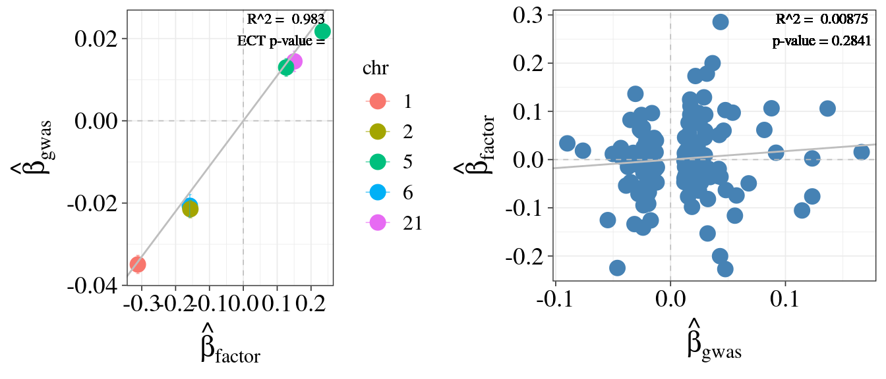
| Version | Author | Date |
|---|---|---|
| 50cff89 | XSun | 2025-12-11 |
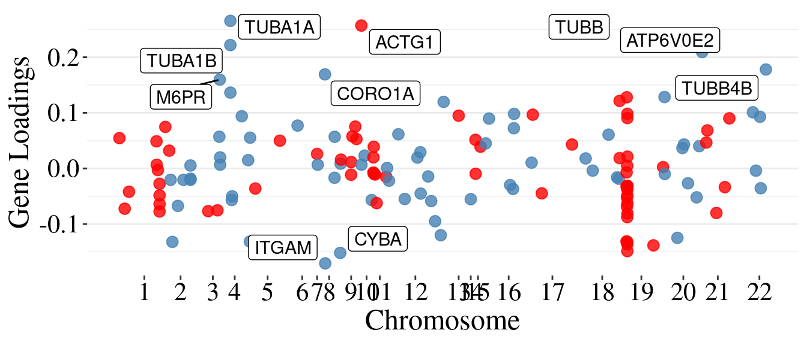
| Version | Author | Date |
|---|---|---|
| 50cff89 | XSun | 2025-12-11 |
[1] "Top 10 genes with largest abs loading: RFXAP,CREB1,NFYB,HLA-DOB,CIITA,HLA-C,TAP1,RFX5,NFYC,CD4"
B_cell--MCH-ebi-a-GCST90002390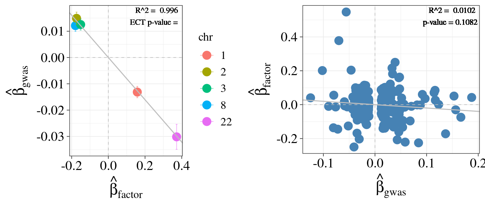
| Version | Author | Date |
|---|---|---|
| 50cff89 | XSun | 2025-12-11 |
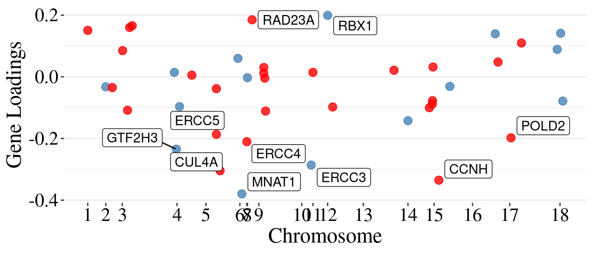
| Version | Author | Date |
|---|---|---|
| 50cff89 | XSun | 2025-12-11 |
[1] "Top 10 genes with largest abs loading: MNAT1,CCNH,CUL4A,ERCC3,GTF2H3,ERCC4,RBX1,POLD2,ERCC5,RAD23A"
platelet--MPV-ebi-a-GCST90002395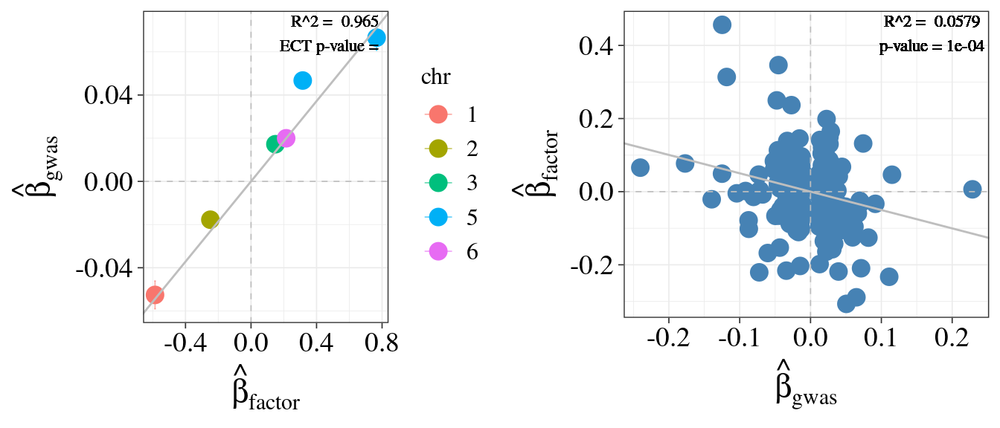
| Version | Author | Date |
|---|---|---|
| 50cff89 | XSun | 2025-12-11 |
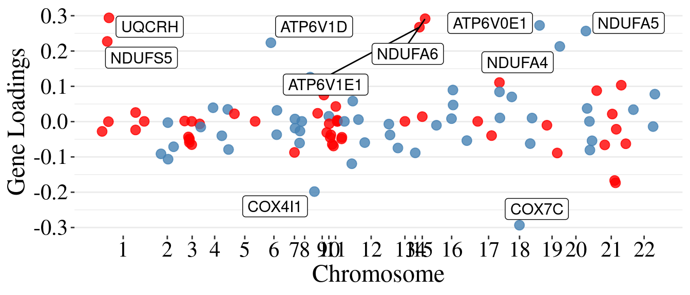
| Version | Author | Date |
|---|---|---|
| 50cff89 | XSun | 2025-12-11 |
[1] "Top 10 genes with largest abs loading: UQCRH,COX7C,NDUFA6,ATP6V0E1,ATP6V1E1,NDUFA5,NDUFS5,ATP6V1D,NDUFA4,COX4I1"
T_cell--RBC-ebi-a-GCST90002403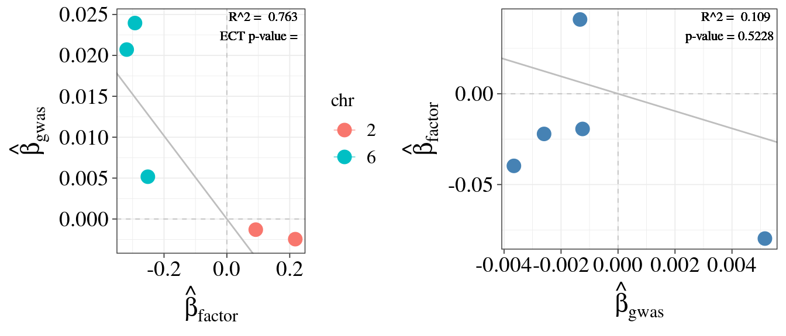
| Version | Author | Date |
|---|---|---|
| 50cff89 | XSun | 2025-12-11 |

| Version | Author | Date |
|---|---|---|
| 50cff89 | XSun | 2025-12-11 |
[1] "Top 10 genes with largest abs loading: LIMD1,RASSF1,MOB1B,TEAD3,NF2,WWTR1,RASSF2,MOB1A,AJUBA,PAK1"
B_cell--MCV-ebi-a-GCST90002392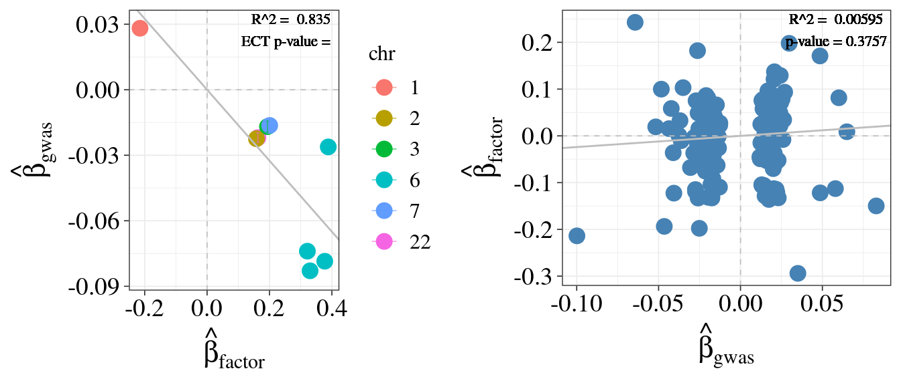
| Version | Author | Date |
|---|---|---|
| 50cff89 | XSun | 2025-12-11 |
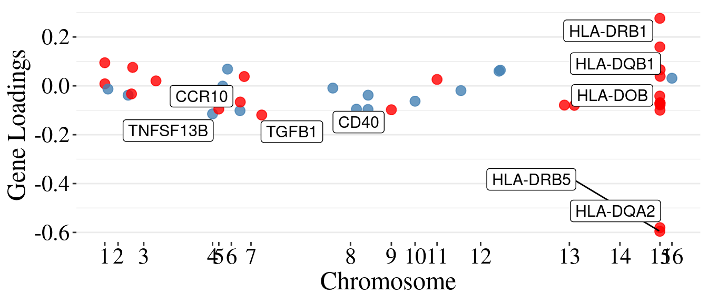
| Version | Author | Date |
|---|---|---|
| 50cff89 | XSun | 2025-12-11 |
[1] "Top 10 genes with largest abs loading: TNFRSF13B,CXCR4,IL4R,CD27,CCR7,CXCR3,CD70,CXCR5,CCL28,IL21R"
sessionInfo()R version 4.2.0 (2022-04-22)
Platform: x86_64-pc-linux-gnu (64-bit)
Running under: CentOS Linux 7 (Core)
Matrix products: default
BLAS/LAPACK: /software/openblas-0.3.13-el7-x86_64/lib/libopenblas_haswellp-r0.3.13.so
locale:
[1] C
attached base packages:
[1] stats4 stats graphics grDevices utils datasets methods
[8] base
other attached packages:
[1] ggrastr_1.0.1 ggrepel_0.9.1
[3] EnsDb.Hsapiens.v75_2.99.0 ensembldb_2.20.2
[5] AnnotationFilter_1.20.0 GenomicFeatures_1.48.3
[7] AnnotationDbi_1.58.0 Biobase_2.56.0
[9] GenomicRanges_1.48.0 GenomeInfoDb_1.39.9
[11] IRanges_2.30.0 S4Vectors_0.34.0
[13] BiocGenerics_0.42.0 tidyr_1.3.0
[15] forcats_0.5.1 gridExtra_2.3
[17] ggplot2_4.0.0 dplyr_1.1.4
loaded via a namespace (and not attached):
[1] ggbeeswarm_0.6.0 rjson_0.2.21
[3] ellipsis_0.3.2 rprojroot_2.0.3
[5] XVector_0.36.0 fs_1.5.2
[7] dichromat_2.0-0.1 rstudioapi_0.13
[9] farver_2.1.0 DT_0.22
[11] bit64_4.0.5 fansi_1.0.3
[13] xml2_1.3.3 codetools_0.2-18
[15] cachem_1.0.6 knitr_1.39
[17] jsonlite_1.8.0 workflowr_1.7.0
[19] Rsamtools_2.12.0 dbplyr_2.1.1
[21] png_0.1-7 compiler_4.2.0
[23] httr_1.4.3 assertthat_0.2.1
[25] Matrix_1.5-3 fastmap_1.1.0
[27] lazyeval_0.2.2 cli_3.6.1
[29] later_1.3.0 htmltools_0.5.2
[31] prettyunits_1.1.1 tools_4.2.0
[33] gtable_0.3.6 glue_1.6.2
[35] GenomeInfoDbData_1.2.8 rappdirs_0.3.3
[37] Rcpp_1.0.12 jquerylib_0.1.4
[39] vctrs_0.6.5 Biostrings_2.64.0
[41] rtracklayer_1.56.0 crosstalk_1.2.0
[43] xfun_0.41 stringr_1.5.1
[45] lifecycle_1.0.4 restfulr_0.0.14
[47] XML_3.99-0.14 zlibbioc_1.42.0
[49] scales_1.4.0 hms_1.1.1
[51] promises_1.2.0.1 MatrixGenerics_1.8.0
[53] ProtGenerics_1.28.0 parallel_4.2.0
[55] SummarizedExperiment_1.26.1 RColorBrewer_1.1-3
[57] yaml_2.3.5 curl_4.3.2
[59] memoise_2.0.1 sass_0.4.1
[61] biomaRt_2.54.1 stringi_1.7.6
[63] RSQLite_2.3.1 highr_0.9
[65] BiocIO_1.6.0 filelock_1.0.2
[67] BiocParallel_1.30.3 rlang_1.1.2
[69] pkgconfig_2.0.3 bitops_1.0-7
[71] matrixStats_0.62.0 evaluate_0.15
[73] lattice_0.20-45 purrr_1.0.2
[75] labeling_0.4.2 htmlwidgets_1.5.4
[77] GenomicAlignments_1.32.0 bit_4.0.4
[79] tidyselect_1.2.0 magrittr_2.0.3
[81] R6_2.5.1 generics_0.1.4
[83] DelayedArray_0.22.0 DBI_1.2.2
[85] pillar_1.9.0 whisker_0.4
[87] withr_2.5.0 KEGGREST_1.36.3
[89] RCurl_1.98-1.7 tibble_3.2.1
[91] crayon_1.5.1 utf8_1.2.2
[93] BiocFileCache_2.4.0 rmarkdown_2.25
[95] progress_1.2.2 grid_4.2.0
[97] data.table_1.14.2 blob_1.2.3
[99] git2r_0.30.1 S7_0.2.0
[101] digest_0.6.29 httpuv_1.6.5
[103] beeswarm_0.4.0 vipor_0.4.5
[105] bslib_0.3.1